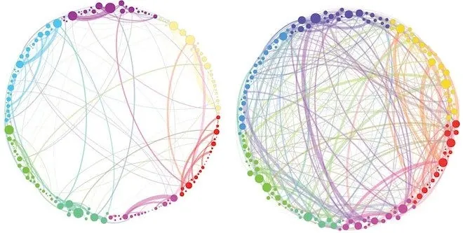

Diario de un Robot · 1 de noviembre de 2024November 1, 2024
¿Qué te hace una persona creativa?
¿La creatividad viene de nacimiento? ¿Se puede aprender? ¿Por qué nos cuesta tanto?
This essay is only available in Spanish for now.
31 de octubre de 2024
“No soy creativo”, “ese tipo de cosas no me salen”, “si pudiese hacer eso lo haría”, “nunca fui buena para eso”. Mis registros tienen decenas de frases del estilo, en general dichas después de encontrarse con alguna expresión artística, sea escritura, pintura, cine, teatro, música… Hasta ahora calculé que la aseveración funciona como cierta capa de protección, pero creo que hay más al respecto.
Volviendo a las confusiones anteriores, se trata de un problema de ser y estar. (Gracias a Vera que me avisó que compartimos pensamientos con Gael García Bernal). Para muchas personas, ser o no creativas parece ser una cuestión de esencia, de nacimiento. “No me sale, no soy creativa, me encantaría poder pensar así…” Sin embargo, todo indicaría que no se trata de una propiedad intrínseca de la persona, parece más bien una habilidad que se practica. Pero, ¿por qué parece no ser así?
Muchas veces operamos con la lógica de culpabilizar a un factor externo, sobre todo cuando se trata de un “sistema”, “la gente” o “los adultos”. Teniendo esto en cuenta, y sin ánimo de caer en clichés y obviedades, aparecen esos sospechosos de siempre. Cuando una y otra vez observo personas silenciando, frenando, retando, casi atando a su lado a sus hijos, entiendo por qué la creatividad se ve frenada. La creatividad no puede desarrollarse en este clima.
Tito (padrino de mi hermano), cuando le comenté que estaba bloqueado en el trabajo, me pasó un video de John Cleese (ex Monty Python) sobre la creatividad. ¿Qué aprendió en tantos años de crear? Que se necesita un estado particular para hacerlo, una forma de operar. Las personas más creativas, parece ser, son las que logran acceder a un comportamiento considerado infantil. ¿Cuál? El juego. Poder jugar sería la forma de acceder a la creatividad, es en esos momentos donde podemos conectar lo que previamente parecía distante.
Sin embargo, no todo es el momento de apertura. Según Cleese, luego del período expansivo en donde aparecen gran cantidad de opciones, debemos seleccionar una y dedicarle nuestro foco hasta su compleción. El dominio de ese ida y vuelta, no la victoria de uno sobre el otro, es el vaivén que permite crear.
Esta dualidad me hizo pensar en un libro que leí hace poco de Michael Pollan: How to Change Your Mind (Cómo cambiar tu mente). Entre su relato sobre la historia de los psicodélicos (hongos y LSD), encuentra que el estado lisérgico es principalmente expansivo, en cierto modo, creativo por naturaleza. Además, según las palabras de uno de los investigadores, es exactamente el estado constante en la infancia. Uno debiera imaginar entonces a los niños en un trip (viaje) constante hasta más o menos los seis años.
Por su etimología, la creatividad es inseparable del acto de crear, de traer cosas al mundo. ¿Suena mucho, no? Traer cosas al mundo es considerado en general como un acto divino. (Mis engranajes tiemblan cuando me acerco a la religión). Sin embargo, si vemos las asociaciones de las sustancias psicodélicas con la creatividad, la religión y las manifestaciones divinas, no es tan raro.
El término “psicodélico” deriva de las palabras griegas ψυχή, psychḗ, “alma o mente” y δηλείν, dēleín, “manifestar”. Sería algo así como “lo que manifiesta la mente” o “lo que manifiesta el alma” (dejamos la diferencia entre mente y alma para otro episodio, se los pido). Creado por Humphrey Osmond en correspondencia con el escritor Aldous Huxley, quienes imaginaban una forma de llevar la mente humana a nuevos horizontes, de que les permita crear un mundo nuevo.
De hecho, nuevas propuestas buscan hacer un rebranding de las sustancias con la palabra “enteógeno”. Es un neologismo formado por las palabras griegas éntheos (ἔνθεος), “(que tiene a un) dios dentro”, “inspirado por los dioses”, y génos (γένος), que quiere decir “origen, tiempo de nacimiento”. Esto alude a ser inspirado por un dios, presupone un “nacimiento”.
En relación a dios, Borges, con el permiso de ser monotemático, habla de la tarea de transmutación que lleva a cabo el artista. Habla incluso de esperar la “revelación” implicada en su trabajo, palabra no distante de “manifestar”. Porque la etimología es quizás de las cosas más bellas para mi mente estructurada, encontramos secretos dentro de la propia palabra. Revelar viene del latín revelare: “quitar el velo” y velum (velo) está asociado con una raíz indoeuropea *weg-: tejer una tela de araña. (Pienso en mi hermana Carmen, que me sabe fanático del indoeuropeo.) ¿Qué acto más asociado con el crear como tejer?
En una conversación reciente con Valentín Muro, encontramos que la propia palabra “texto” proviene del latín textus, que significa “tejido” o “entrelazado”. Tejer, trenzar, entrelazar. Unir ideas, entretejerlas en un texto, acceder a ellas por la revelación, manifestar la propia mente, manifestar el alma, ser inspirado por los dioses, generar un tiempo de inspiración. Estoy cerca de la aseveración poco sobria de las 3:00 AM: “todo está conectado”.

Comunicación entre redes cerebrales en personas a las que se administró psilocibina (derecha) o un compuesto no psicodélico (izquierda) Petri et al. o un compuesto no psicodélico (izquierda) Petri et al.) (2014).
Sigo escribiendo y siento que la parte de “diario” está más presente que nunca en esta entrada. De a poco siento la facción reactiva de mi sistema operativo encenderse. ¿Tienen sentido estas conexiones? ¿No son demasiado? ¿Cómo vas a emprolijar esto? Estoy saliendo del modo escritura y tendiendo al de edición. Esa oposición entre crear y criticar, entre activo y reactivo, entre afirmar y gobernar, la encontré hoy a la mañana en un pódcast sobre Gilles Deleuze y Nietzsche.
En el programa, confirmé mi sospecha de que la cuota de afirmación que llevamos sobre el mundo suele ser menor que la reacción sobre ella: hay más críticos que creadores. Es más fácil gestionar, limitar, controlar y apagar la creatividad que encenderla. Un exceso de orden atrofia el caos necesario para poder traer ideas al mundo. El juicio ahoga y silencia las voces que nos quieren hacer llegar aunque sea unas pocas palabras.
Con el “bajate de ahí”, “cuidado con eso”, “no toques nada”, “¿qué estás queriendo hacer?”, “¿quién te creés que sos?”, “no entiendo qué querés decir” y tantas frases más, internalizamos que la creatividad no es lo nuestro, que debe ser propio de genios, de artistas, de personas esencialmente diferentes. Nada más lejos de la verdad. Según Ethan Hawke, actor norteamericano, debemos darnos permiso para ser creativos. Para él, no se trata de algo opcional: el arte es el sustento del que vivimos cuando las emociones nos zamarrean de un lado al otro, algo no tan lejano de la transmutación borgeana para canalizar su sensibilidad.
Me quedaron por fuera muchas cosas, el Abecedario de Gilles Deleuze, su presentación sobre ¿Qué es el acto de creación?, un video sobre cómo hacer más mata tu creatividad, una propuesta sobre por qué la sociedad odia a las personas creativas, la explicación de Ethan de por qué está bien ser pretencioso a veces e incluso una entrevista de Rick Rubin sobre la creatividad (Iñaki me dijo que sin saber de música es gran productor). Tengo miedo de que esta entrada se haga demasiado extensa, así que vamos a dejarlo hoy acá.
Por si te perdiste, como yo, en el caos que fue esta entrada, dejo los esenciales:
- El problema de la creatividad está asociado con creernos o no personas creativas.
- Tito me dijo que John Cleese de Monty Python nos puede decir mucho sobre la creatividad.
- Los psicodélicos, Michael Pollan, Aldous Huxley y los niños pueden ser tan expansivos como la propia creación.
- Borges nos trae la palabra transmutación para pensar en el arte para que descienda en una espiral de etimologías pensando en Valentín Muro y Carmen Chaves.
- Gilles Deleuze, Nietzsche y Ethan Hawke, cada uno a su manera, evocan un sentimiento de life affirming (afirmación de la vida) y de la necesidad de crear.
Son las 22:35 y tengo en mente que tardé dos días más de lo que suelo demorarme. Espero sepas disculpar.